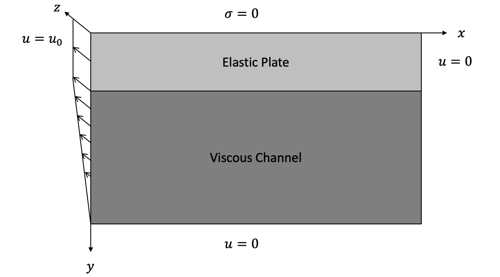
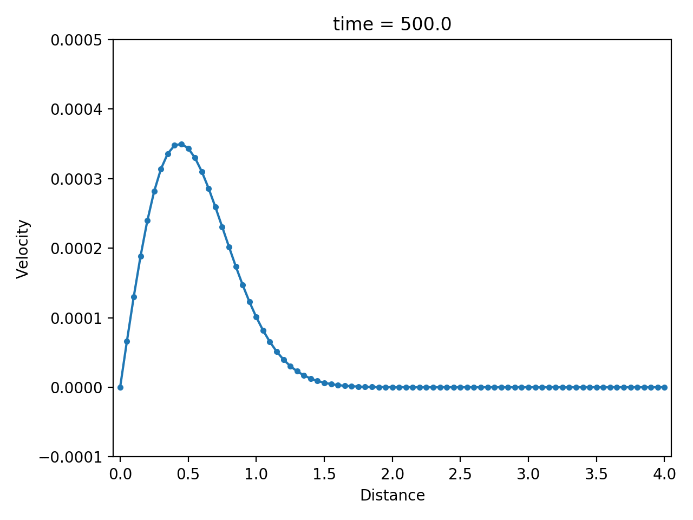

Antiplane Viscoelasticity
In a previous section, we consider the viscoelasticity constitutive relation. In this section, we consider a very important special case: antiplane viscoelasticity. In this case, the displacement only occurs in the $z$ direction, so we can use a scalar valued function $u(x,y)$ to denote the displacement.

The constitutive relation is (kinetics equation)
Here
To complete the equation, we also have the balance of linear momentum (kinematic equation)
where $f$ is the body force and $\rho$ is the density.
In the case $\eta$ is very small, the constitutive relation can be approximated by
By plugging the equations into Equation 1 (ignoring the body force), and integrate in time
Equation 2 is a diffusion equation.
In the case $\eta$ is very large, the constitutive relation is reduced to linear elasticity
Therefore, the kinematic equation is reduced to a wave equation
We discretize the constitutive relation using an implicit scheme
which is equivalent to
Numerical example
| displacement $u$ | velocity $\dot u$ | strain rate $\partial \dot u / \partial x$ |
|---|---|---|
|  |  |
Inversion
| True model | Inverted result |
|---|---|
We also show the inversion results in each iteration: